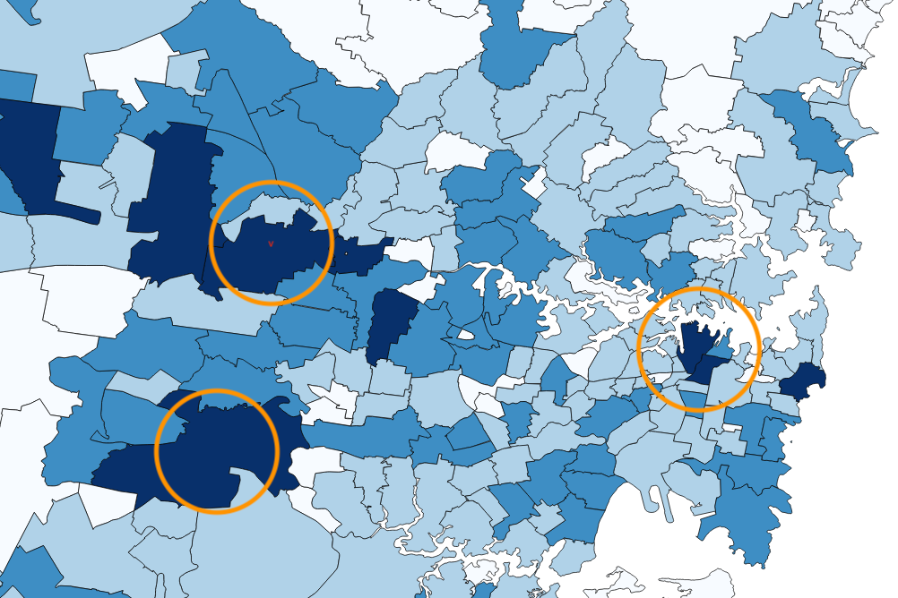
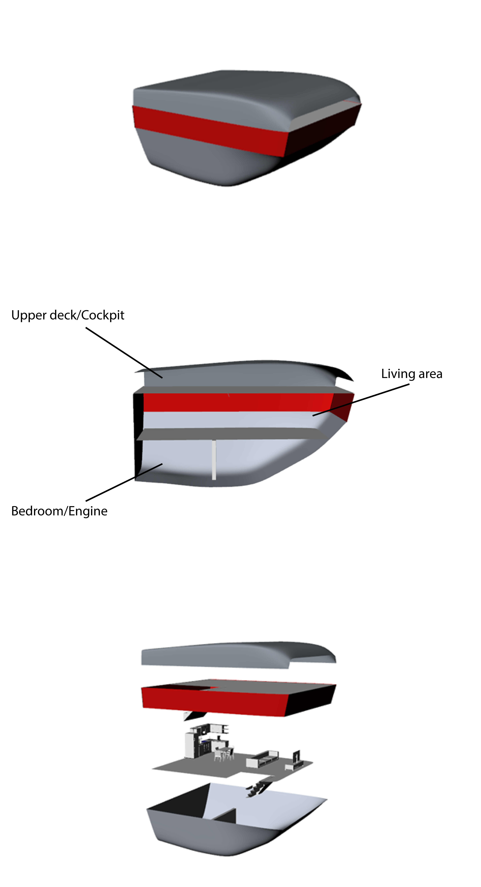

Sumiyoshi Sanjin
Problem
Sydney’s lack of housing affordability and accessibility close to the city’s centre has forced young adults to reside in expensive housing development locations often over 40km from the CBD. This has resulted in hour long commutes to work, missed employment opportunities, and ultimately reveals a population distribution that is driven primarily by housing prices. A high proportion of residents age 25 to 40 live in the suburbs far away from their jobs in the CBD and North Sydney, as depicted below.

Solution
A comprehensive water network with hybrid boat-houses, or pods, docking in large waterfront residential towers. Residents living in these pods will be able to relocate their accommodation between any of the large towers situated in several regions such as Barangaroo, Pyrmont, Parramatta, Homebush, and South Sydney.
The proposed design is inspired by Sydney’s living culture, where young adults aim to move towards Sydney’s heart for study and work opportunities. This solution addresses the need for accessible accommodation and promotes a transitory lifestyle of relocating between regions to best suit study and work needs without the burden of high housing prices.


The Design


The design of the pods are influenced by the tiny home and campervan-dwelling movement, where the utilities and living needs of the individual are satisfied in the limited space. The pods include two floors of customisable living arrangements to suit individual tastes, along with an upper cockpit deck. These pods will be driven by electric powered motors and batteries allowing aquatic movement, and will be recharged once docked at a residential tower.
The waterfront towers act as semi-permanent residences, which provide services such as electricity, water, sewage to the docked pods. These strategically placed towers boast a balcony with a waterfront view for the resident, whilst allowing for ease of accessibility to the street level for transport options. The towers also allow for technicians to perform regular maintenance on the pod exteriors without disturbing residents.